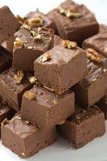
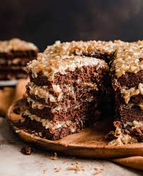

What is Sweet German Chocolate?
 When you hear of a German chocolate cake, your first thought is that Germany is where the cake originated – hence the name. This is one of those food items where the name is a bit deceiving, however. German chocolate cake gets its name from an ingredient it uses: German’s Sweet Chocolate. This chocolate was originated by the Baker’s Chocolate Company (now a subsidiary of Kraft Foods) in the mid 1850s and was named after it’s creator, Sam German. The story of the chocolate says that a misprint in a newspaper that included the recipe for the first German Chocolate Cake simply left out the “s” on the name, and this is why the chocolate is often known simply as “German.” The chocolate is similar to a semisweet chocolate, but has a higher sugar content to it. This means that recipes that use it tend to be a little bit sweeter than ones that don’t.
If you’re making a recipe that calls for German’s chocolate, or German chocolate, don’t worry if you can’t find it. You can substitute semisweet chocolate and still have a great finished product.
What Is the Difference Between German Sweet Chocolate & Semi-Sweet Chocolate?
Semi-sweet and German sweet chocolate are two forms of dark chocolate. They contain chocolate liquor, cocoa butter and sugar, plus emulsifiers and vanilla or vanilla flavoring. The proportions of chocolate liquor and sugar differ between these two types of chocolate. They also differ in flavor and their cooking and baking applications. German sweet chocolate is sweeter than semi-sweet chocolate and has a milder chocolate flavor.
History of German Sweet Chocolate
Contrary to popular belief, the origin of German sweet chocolate is American, not German. German sweet chocolate is a style of chocolate developed by Samuel German of the Baker's Chocolate Company in 1852. It was created as a snacking chocolate bar. German sweet chocolate is also called German's sweet chocolate, German chocolate and sweet dark chocolate.
